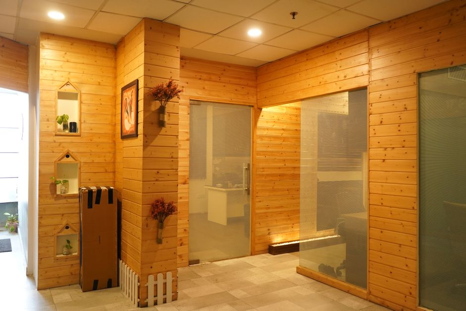

Connect the context
Start with a defined set of sources and the people, organizations, or items they describe.
Bring the information around your business into a shared picture. Ask a clear question. See the evidence behind the answer.
A customer appears in several systems. A cost changes in one place. A decision depends on information that has already moved.
The operating system connects these fragments through identity, history, and evidence. You can follow the subject across its records instead of piecing the story together each time.
Start with a question.
Follow the answer back to its source.
One company. Several names.
FES and Fintech Equipment Services resolve to the same company, alongside its vendor ID and Stripe customer record.
Illustrative interaction using examples from the supplied source. No live systems connected.
Start with a defined set of sources and the people, organizations, or items they describe.
Resolve identities, preserve changes over time, and keep each observation attached to its origin.
Present the answer, its supporting records, and the questions that still need attention.
Begin with one decision and the sources needed to support it. Define the question, record owners, and what a complete answer would include.
The architecture is organized around traceable observations. The interface examples show how an answer can lead back to a source record.
Preserve both observations and their context. A disagreement becomes something to review, rather than a value silently overwritten.
The starting point is the information already held in your systems. The work is to connect and interpret it around a defined decision.

One system holding the whole picture, instead of six that each know a part of it.
Bring the uncertainty. We’ll help define the work.